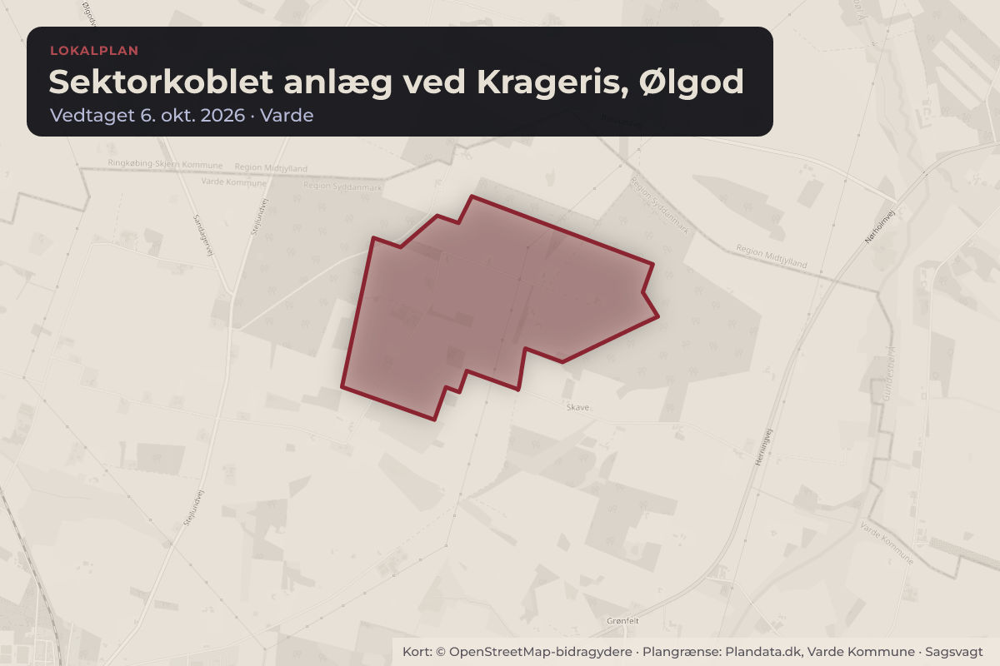
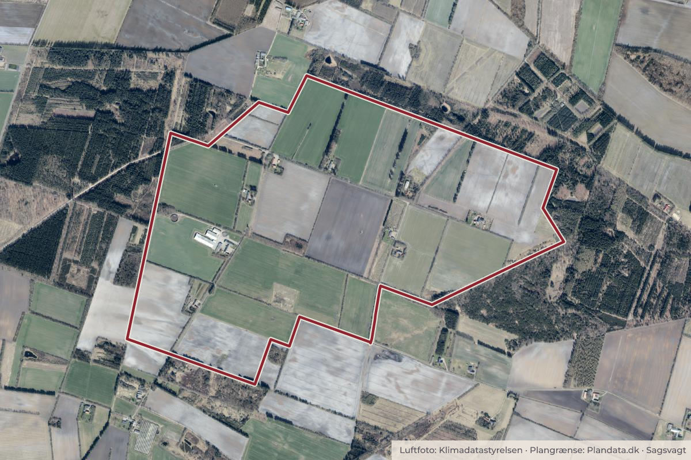

Besluttet 6. oktober, Byrådet, Varde
Lokalplan for et sektorkoblet anlæg ved Krageris, Ølgod
Lokalplan 24.10.L03 er udarbejdet med henblik på at give mulighed for etablering af et sektorkoblet anlæg med datacenter og væksthusgartneri ved Krageris. Byrådet behandlede den 20. april 2026 sagskomplekset for et sektorkoblet anlæg ved Krageris nordøst for Ølgod.

Kort: © OpenStreetMap-bidragydere. Plangrænse: Plandata.dk, Varde Kommune.

Har du et billede fra Sektorkoblet anlæg ved Krageris, Ølgod? Send det til os
Kort fortalt
- Hvem
- Byrådet, Varde Kommune
- Hvornår
- Tirsdag 6. oktober 2026
- Status
- Besluttet. Forvaltningens anbefaling blev sat til afstemning. Sarah Andersen Preben Friis-Hauge Poul Burgaard Per Thisted Claus Brink Simon Burkarl Tina Agergaard Hansen Inger Marie Kristensen Ole Vad Hansen Tom Arnt Thorup Kitty Gamkinn Christian Bergholdt Peter Nielsen Harry Voigt Henriette Harmuth Nørgaard Julie Gottschalk Mariane Nygaard Holm Henrik Vej Kastrupsen Anja Schmidt Hallum Hansen Mikkel Berggreen Schmidt Erling Thrane A.C.Beslutningen er forkortet her. Læs hele beslutningen
Læs hele sagen Kommunens egen tekst
Sagsfremstilling
Lokalplan 24.10.L03 er udarbejdet med henblik på at give mulighed for etablering af et sektorkoblet
anlæg med datacenter og væksthusgartneri ved Krageris.
Byrådet behandlede den 20. april 2026 sagskomplekset for et sektorkoblet anlæg ved Krageris
nordøst for Ølgod. Det sektorkoblede anlæg består af datacenter og væksthusgartneri, hvor
overskudsvarme fra datacentret anvendes til opvarmning af gartneriets væksthuse. Udover
behandling af forslag til de planer og dokumenter, der nu skal tages endelig stilling til, tilkendegav
Byrådet ekspropriationsvillighed for offentlig vej og hensigt om fritagelse af grundejere for stigning i
grundskyld, jf. ejendomsskattelovens § 10. Herudover sendte Byrådet forslag til Tillæg 19 til
Spildevandsplanen 2019-2029 i høring.
Sager til endelig politisk behandling i Byrådet:
Tillæg 02 til Kommuneplan 2025
Lokalplan 24.10.L03 inkl. udbygningsaftale
Sag om nedlæggelse af offentlige og private fællesveje
Miljøkonsekvensvurdering med § 25-tilladelse (VVM-tilladelse)
Der skal være overensstemmelse mellem beslutningerne til de enkelte sager i sagskomplekset.
For uddybning af projektet og sagskomplekset henvises til orienteringspunkt ”Krageris. Orientering.
Sektorkoblet anlæg: Planlægning, miljøvurdering og godkendelser”.
Lokalplan 24.10.L03
Forslag til lokalplan 24.10.L03 blev vedtaget af Byrådet den 20. april 2026. Siden har forslaget til
lokalplanen været fremlagt i offentlig høring i perioden fra den 29. april 2026 til den 25. juni 2026.
Formålet med lokalplanen er at give mulighed for etablering af et sektorkoblet anlæg nordøst for
Ølgod.
Det sektorkoblede anlæg er omfattet af pligt om miljøvurdering. Der er derfor udarbejdet en fælles
miljørapport efter miljøvurderingsloven for Tillæg 02 til Kommuneplan 2025, Tillæg 19 til
Spildevandsplan 2019-2029 og Lokalplan 24.10.L03. Miljørapporten rummer både en
miljøkonsekvensvurdering af det konkrete projekts væsentlige virkninger på miljøet (tidl. VVM) samt
en miljøvurdering af planerne.
Der er udarbejdet en sammenfattende redegørelse til den fælles miljøvurdering af Tillæg 02 til
Kommuneplan 2025, Tillæg 19 til Spildevandsplan 2019-2029 og Lokalplan 24.10.L03, der redegør for
miljøhensyn, valg af alternativer og hvilke miljøpåvirkninger, der skal overvåges.
Kragerisvej mellem projektområdet og Herningvej skal udvides, og der skal etableres
kanaliseringsanlæg og en ny sekundær vej mellem projektområdet og Herningvej. Der har derfor
været offentliggjort et udkast til en udbygningsaftale sammen med lokalplanforslaget. Aftalen
beskriver fordeling af ansvar og udgifter til den nødvendige vejanlæg.
Ved realisering af lokalplanen deles Kragerisvej i to. Den østlige del af vejen bør gives et nyt navn, og
det blev sammen med behandlingen af lokalplanforslaget besluttet at benytte vejnavnet Symbiosen.
Ved høringsperiodens udløb var der indkommet 42 høringssvar. Høringssvarene handler primært om
natur og biodiversitet, lokalsamfund, trafik, støj og menneskers sundhed, lys, landskab, elforsyning og
ledninger, visualiseringer, varmeøeffekt, alternativer og kumulative effekter, processen og
planlægning mere generelt.
Tillæg 02 til Kommuneplan 2025 skal vedtages, før denne lokalplan kan vedtages.
Vedtagelse af Tillæg 19 til Spildevandsplan 2019-2029 er en forudsætning for, at lokalplanen kan
realiseres. Tillægget vedtages administrativt, jf. delegationsplanen.
Sagen er en A-sag. Lokalplanen er en del af et større sagskompleks med spildevandstillæg,
kommuneplantillæg, miljøvurdering m.m. På grund af forskellige beslutningsprocesser i de forskellige
sagstyper og sagskompleksets karakter fulgtes dagsordenspunkterne for planforslagene m.v. til
Byrådet. Lokalplanen vedtages endeligt af Byrådet.
FORVALTNINGENS
Vurdering
De indkomne bemærkninger er behandlet i vedlagte notat, hvor der er forslag til vurdering af de
indkomne bemærkninger.
På baggrund af forslagets offentlige høring og den efterfølgende dialog med bygherre har
forvaltningen lavet korrektioner i lokalplanens bestemmelser.
Korrektionerne vedrører:
Placering og etablering af afskærmende beplantning
Sikring af naturkvalitet på ubebyggede arealer
Hegning ift. flora og fauna
Lyspåvirkning fra området
Korrektionerne er fuldt formuleret i den sammenfattende redegørelse, som er vedlagt, samt markeret
i den vedlagte lokalplan.
Forvaltningen vurderer, at korrektionerne præciserer bestemmelserne uden at ændre deres formål.
Bygherre har haft korrektionerne af lokalplanen til udtalelse. Bygherre havde ingen bemærkninger
hertil.
KONSEKVENS I FORHOLD TIL VORES VISION, BYRÅDSGRUNDLAGET OG POLITIKKER
I strategien ”Vækst i Varde Kommune – strategi for samarbejde om vækst mellem virksomheder og
kommune, 2017-2025” fremgår det som en kommunal indsats, at ”Varde Kommune vil arbejde
målrettet på at tiltrække f.eks. store datacentre og andre pladskrævende virksomheder, der kan
udnytte de gode pladsforhold og vores infrastrukturelle styrker i forhold til elforsynings- og
bredbåndsnettet.” Det sektorkoblede anlæg er et resultat af denne indsats.
Det forventes, at det samlede sektorkoblede anlæg vil rumme op til 600 arbejdspladser, og projektet
kan derfor være med til at indfri vækststrategiens målsætning om forøgelse af antallet af
arbejdspladser i Varde Kommune, og byrådsgrundlagets målsætning om forøgelse af kommunens
indbyggertal i 2030.
RETSGRUNDLAG
Kommuneplan 2025
Planloven
Miljøvurderingsloven
Økonomi
Ingen
HØRING
Ingen
ANBEFALING
Forvaltningen anbefaler, at det indstilles til Byrådet
at lokalplan 24.10.L03 for et sektorkoblet anlæg ved Krageris, Ølgod vedtages,
at udbygningsaftalen vedtages uændret,
at den tilhørende miljøvurdering med rettelsesblad vedtages,
at den sammenfattende redegørelse til miljøvurderingen vedtages,
at notatet med resumé af indkomne bemærkninger til lokalplanforslaget m.v. samt udkast til
vurdering af disse tiltrædes,
at vejnavnet Symbiosen benyttes, og
at forvaltningen bemyndiges til at sikre sammenhænge i sagskomplekset samt foretage redaktionelle
ændringer og tekniske tilretninger inden offentliggørelse af planer, tilladelser m.m. for Kragerisprojektet.
Beslutning
Forvaltningens anbefaling blev sat til afstemning.
Sarah Andersen
Preben Friis-Hauge
Poul Burgaard
Per Thisted
Claus Brink
Simon Burkarl
Tina Agergaard Hansen
Inger Marie Kristensen
Ole Vad Hansen
Tom Arnt Thorup
Kitty Gamkinn
Christian Bergholdt
Peter Nielsen
Harry Voigt
Henriette Harmuth Nørgaard
Julie Gottschalk
Mariane Nygaard Holm
Henrik Vej Kastrupsen
Anja Schmidt Hallum Hansen
Mikkel Berggreen Schmidt
Erling Thrane
A.C. Hoxcer Nielsen
Jonna Jul Gudmundsen
Sandie Eis Ravn
Parti
For
V
V
V
V
V
V
V
V
V
V
N
I
I
Æ
Æ
O
C
C
F
F
A
A
A
A
X
X
X
X
X
X
X
X
X
X
Imod
Hverken for
eller imod
X
X
X
X
X
X
X
X
X
X
X
X
X
X
FORVALTNINGENS ANBEFALING BLEV GODKENDT.
Mindretalsudtalelse: NÆRdemokraterne kan ikke tiltræde forvaltningens anbefaling. Ansøger har efter
vores vurdering ikke tilstrækkeligt dokumenteret indsatsen for at opnå opbakning og finde løsninger
for naboer med risiko for økonomisk tab. Desuden er væsentlige miljø- og infrastrukturelle forhold
fortsat uafklarede, herunder restvarmeudnyttelse og samtidighed, et betydeligt lokalt
investeringsbehov i fjernvarmeinfrastruktur, miljøpåvirkninger fra varmeafkast, skurby samt
nødvendig nettilslutning og kabeltracéer.
Fraværende
Lars Teglgaard
Tidligere beslutninger
Plan- og Udviklingsudvalget
Forvaltningens anbefaling blev sat til afstemning.
Preben Friis-Hauge
Ole Vad Hansen
Tom Arnt Thorup
Erling Thrane
Kitty Gamkinn
Mariane Nygård Holm
Christian Bergholdt
Parti
For
V
V
V
A
N
C
I
X
X
X
X
Imod
Hverken for
eller imod
X
X
X
Forvaltningens anbefaling er hermed godkendt.
Mindretalsudtalelse: NÆRdemokraterne kan ikke tiltræde forvaltningens anbefaling. Ansøger har efter
vores vurdering ikke tilstrækkeligt dokumenteret indsatsen for at opnå opbakning og finde løsninger
for naboer med risiko for økonomisk tab. Desuden er væsentlige miljø- og infrastrukturelle forhold
fortsat uafklarede, herunder restvarmeudnyttelse og samtidighed, et betydeligt lokalt
investeringsbehov i fjernvarmeinfrastruktur, miljøpåvirkninger fra varmeafkast, skurby samt
nødvendig nettilslutning og kabeltracéer.
Fraværende
Økonomi- og Personaleudvalget
Anbefalingen blev godkendt.
Fraværende
Bilag
- Lokalplan 24.10.L03 for et sektorkoblet anlæg ved Krageris, Ølgod - med markeringer
- Resumé af indkomne bemærkninger med bilag 20260910 (9486428 - GEO-2024-10005)
- Samlede høringssvar med bilag, sektorkoblet anlæg ved Krageris, Ølgod (9481582 - GEO2024-10005)
- Udbygningsaftale, Krageris (9256604 - GEO-2024-10005)
- Fuldmagter, udbygningsaftale, Krageris (9258939 - GEO-2024-10005)
- Udbygningsaftale - Bilag: Princip for veje (9112469 - GEO-2024-10005)
- Sammenfattende redegørelse, sektorkoblet anlæg ved Krageris, Ølgod (9481584 - GEO-202410005)
- Rettelsesblad til miljørapport for et sektorkoblet anlæg ved Krageris, Ølgod (9481007 - GEO2025-01350)
- Miljørapport for et sektorkoblet anlæg ved Krageris - med markeringer (9481578 - GEO-202501350)
- Miljørapport - Bilag 1_Afgrænsningsnotat Krageris (9335152 - GEO-2025-01350)
- Miljørapport - Bilag 2_Resumé af indkomne bemærkninger fra første offentlighedsfase
- Miljørapport - Bilag 3_Resumé af indkomne bemærkninger fra første offentlighedsfase,
- supplerende høring (9258316 - GEO-2025-01350)
- Miljørapport - Bilag 4_Håndtering af returskyllevand fra jernfiltrre, Rambøll (9258317 - GEO2025-01350)
- Miljørapport - Bilag 5_Vand- og spildevandsbalance (9335085 - GEO-2025-01350)
- Miljørapport - Bilag 6_Regn- og spildevandshåndtering, Søren Jensen Rådgivende Ingeniører
- Miljørapport - Bilag 7_Grundvandsmodelrapport, Rambøll (9258320 - GEO-2025-01350)
- Miljørapport - Bilag 8_Påvirkning af hydrologiske ændringer, EKJ Rådgivende Ingeniører
- Miljørapport - Bilag 9_Luftemission - immissionsberegninger datacenter, C7 Consulting
- Miljørapport - Bilag 10_Luftemission - immissionsberegninger drivhuse, C7 Consulting
- Miljørapport - Bilag 11_Luftemission - depositionsberegning, C7 Consulting (9335088 - GEO2025-01350)
- Miljørapport - Bilag 12_Trafiknotat, Raw Mobility (9335089 - GEO-2025-01350)
- Miljørapport - Bilag 13_Geotechnical Ground Investigation Report, 4AP Geoteknik (9258326 GEO-2025-01350)
- Miljørapport - Bilag 14_Skyggediagrammer, GPP Arkitekter (9258327 - GEO-2025-01350)
- Miljørapport - Bilag 15_Støjrapport - anlægsfase, Niras (9335102 - GEO-2025-01350)
- Miljørapport - Bilag 16_Støjrapport – drift, NIRAS (9258329 - GEO-2025-01350)
- Miljørapport - Bilag 17_Opsummering af udendørs belysningsforhold. IVE Rådgivning
- Miljørapport - Bilag 18_Visualiseringer, GPP Arkitekter (9258331 - GEO-2025-01350)
- Miljørapport - Bilag 19_Landskabskarakteranalyse, LYTT (9258332 - GEO-2025-01350)
- Miljørapport - Bilag 20_Naturvurderingsrapport, EKJ Rådgivende Ingeniører (9258333 - GEO2025-01350)
- Miljørapport - Bilag 21_Jordnotat. Tidlige studier i jordhåndtering, LYTT (9258334 - GEO2025-01350)
- Miljørapport - Bilag 22_Naturstrategi, LYTT (9258335 - GEO-2025-01350)
- Miljørapport - Bilag 23_Notat om skovbyggelinje (9336006 - GEO-2025-01350)
Kilde: Varde Kommune, Byrådet, referat fra mødet tirsdag 6. oktober 2026, punkt 9. Læs den originale sag hos kommunen.